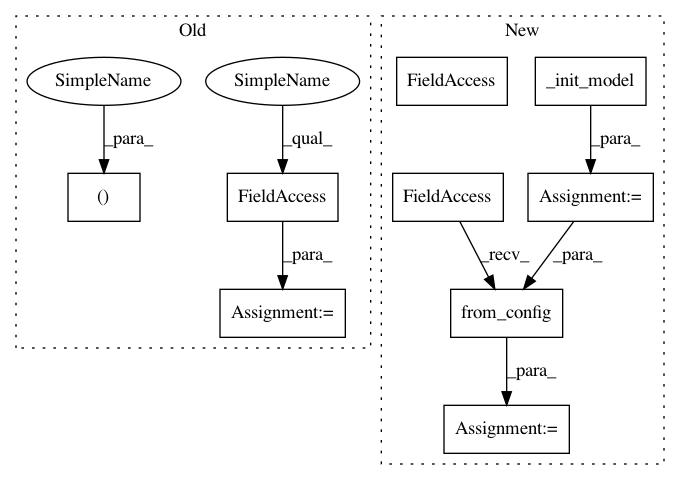

72ddc9de29a7987330720927d82a7769f3a82c5c,opennmt/runner.py,Runner,average_checkpoints,#Runner#Any#Any#,239
Before Change
Returns:
The path to the directory containing the averaged checkpoint.
checkpoint, _ = self._init_run()
checkpoint.restore()
model = checkpoint.model
optimizer = checkpoint.optimizer
model.create_variables(optimizer=optimizer)
trackables = dict(model=model, optimizer=optimizer)
output_dir = checkpoint_util.average_checkpoints(
checkpoint.model_dir,
After Change
The path to the directory containing the averaged checkpoint.
config = self._finalize_config()
model = self._init_model(config)
optimizer = model.get_optimizer()
checkpoint = checkpoint_util.Checkpoint.from_config(config, model, optimizer=optimizer)
checkpoint.restore()
model.create_variables(optimizer=optimizer)
trackables = dict(model=model, optimizer=optimizer)
output_dir = checkpoint_util.average_checkpoints(
In pattern: SUPERPATTERN
Frequency: 3
Non-data size: 9
Instances
Project Name: OpenNMT/OpenNMT-tf
Commit Name: 72ddc9de29a7987330720927d82a7769f3a82c5c
Time: 2020-03-30
Author: guillaumekln@users.noreply.github.com
File Name: opennmt/runner.py
Class Name: Runner
Method Name: average_checkpoints
Project Name: OpenNMT/OpenNMT-tf
Commit Name: 72ddc9de29a7987330720927d82a7769f3a82c5c
Time: 2020-03-30
Author: guillaumekln@users.noreply.github.com
File Name: opennmt/runner.py
Class Name: Runner
Method Name: infer
Project Name: OpenNMT/OpenNMT-tf
Commit Name: 72ddc9de29a7987330720927d82a7769f3a82c5c
Time: 2020-03-30
Author: guillaumekln@users.noreply.github.com
File Name: opennmt/runner.py
Class Name: Runner
Method Name: average_checkpoints
Project Name: OpenNMT/OpenNMT-tf
Commit Name: 72ddc9de29a7987330720927d82a7769f3a82c5c
Time: 2020-03-30
Author: guillaumekln@users.noreply.github.com
File Name: opennmt/runner.py
Class Name: Runner
Method Name: score